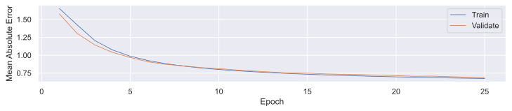
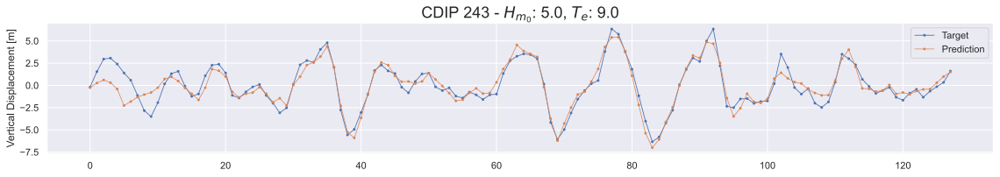
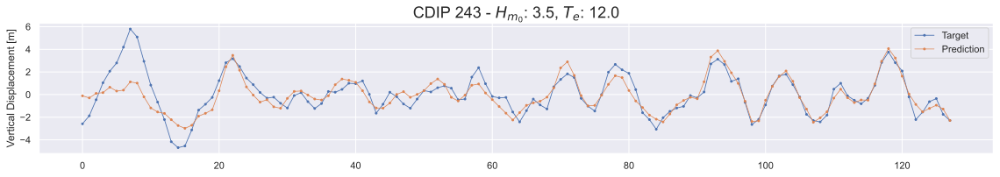
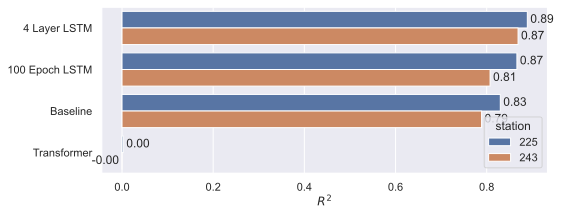

Make this Notebook Trusted to load map: File -> Trust Notebook
DTSA 5511 Final Presentation
Using Deep Learning to Model Ocean Surface Elevation using Real World Data
Andrew Simms
University of Colorado Boulder
2024-12-09
Introduction
- Improved ocean surface elevation prediction could benefit ocean engineering and wave energy
- Project uses deep learning to forecast surface elevation from buoy data
- Goal is accurate real-time prediction to improve:
- Ocean Structure Designs
- Fatigue
- Safety Factors
- Wave Energy Converters
- Capture Efficiency
- Fatigue
- Ocean Structure Designs
- Presentation is a summary of results
- Full resorts in report
Locations
Two strategic sites chosen for long-term data and seasonal variations
Kaneohe Bay, Hawaii (CDIP 225):
- Deep water site (84m) at Navy’s Wave Energy Test Site
- Mixed climate with trade winds and Pacific swells
- Consistent conditions, data since 2012
Nags Head, North Carolina (CDIP 243):
- Intermediate depth (21m) near Jennette’s Pier Wave Energy Center
- Wind-driven waves with high variability from Cape Hatteras weather
- Experiences severe storms and tropical cyclones, data since 2017
Make this Notebook Trusted to load map: File -> Trust Notebook
Data Acquisition Hardware
Datawell Waverider DWR-MkIII buoys sample at 1.28 Hz
Captures 3D displacement measurements for wave motion
Data undergoes CDIP quality control and processing
Tracks buoy movement in three dimensions:
- Vertical (Z)
- East-West (X)
- North-South (Y)
Aim is to forecast real-time displacements using historical data from all axes
Deep Learning Architecture Overview
Model Architecture:
- Uses two approaches: Long Short-Term Memory (LSTM) networks introduced by Hochreiter and Schmidhuber (1997) and Transformers by Vaswani et al. (2023)
- LSTM captures long-term dependencies in temporal sequences
- Transformers process sequential data using self-attention mechanisms
Implementation:
- Built using PyTorch (Ansel et al. 2024) framework
- Builds on previous wave forecasting work with neural networks
- Enables direct comparison between LSTM and Transformer performance
Exploratory Data Analysis - Displacement
- Data Collection & Processing:
- CDIP buoys use integrated sensor arrays (accelerometers, magnetometers, GPS)
- Captures high-resolution 3D wave motion in real-time
- Figure 8 shows typical wave patterns (CDIP 225, Nov 2017)
- Data Characteristics:
- Three displacement components: vertical, N/S, E/W
- Non-linear wave patterns evident in measurements
- Well-suited for deep learning modeling approaches
EDA - Displacement Zoomed
Available Displacement Data
| Start Date [UTC] | End Date [UTC] | Duration | |
|---|---|---|---|
| 0 | 2016-08-26 22:00 | 2024-09-11 19:00 | 8 years, 17 days |
| 1 | 2018-08-26 15:00 | 2023-07-13 00:00 | 4 years, 10 months, 21 days |
Data Cleaning
- Original multi-year data exceeds reasonable training capacity
- Use statistical methods to compute 30 minute statistics
- MHKiT-Python transforms data to 30-minute statistics
- Key parameters:
- Significant wave height (H_{m_0})
- Energy period (T_e)
- Omnidirectional wave energy flux (J)
- Use these statistics to identify unique wave conditions for model training
import mhkit.wave as wave
def calculate_wave_qoi(input_df, station_number, path):
input_df = input_df.dropna(axis="index")
column = "vert_displacement_meters"
if len(input_df) != 2304:
return None
sample_rate_hz = 1.28
n_fft = 256
window = "hann"
detrend = True
surface_elevation = pd.DataFrame(input_df[column].iloc[:2048])
spectra = wave.resource.elevation_spectrum(
surface_elevation, sample_rate_hz, n_fft, window=window, detrend=detrend
)
return {
"time": input_df.index[0],
"significant_wave_height_meters": wave.resource.significant_wave_height(spectra)["Hm0"].to_list()[0], # type: ignore
"energy_period_seconds": wave.resource.energy_period(spectra)["Te"].to_list()[0], # type: ignore
"omnidirectional_wave_energy_flux": wave.resource.energy_flux(spectra, np.nan, deep=True)["J"].to_list()[0], # type: ignore
"station_number": station_number,
"path": str(path),
}Wave Statistics vs. Time

Wave Classification Dataset Creation Method
- Classify data into 30 minute bins:
- Categorizes data using wave height (H_{m_0}) and energy period (T_e)
- Creates sea state matrices to show wave condition frequency
- Ensures training data covers diverse wave states
- Sample data from bins by count:
- Use random sampling to pick a single 30 minute dataset from each bin
- Option to pick more samples
- Yields:
- Unique 30 minute data bins
- 76 for CDIP 225 in Kaneohe Bay, Hawaii
- 112 for CDIP 243 in Nags Head, NC
Deep Learning Models - LSTM
- Processes 3D displacement through stacked LSTM layers
- Uses dropout regularization for stability
- Final linear layer outputs displacement predictions
class LSTMModel(WavePredictionModel):
def __init__(
self,
input_dim: int,
hidden_dim: int = 128,
num_layers: int = 2,
dropout: float = 0.2,
learning_rate: float = 1e-3,
):
super().__init__(input_dim, learning_rate)
self.save_hyperparameters() # Save all init parameters
self.hidden_dim = hidden_dim
self.num_layers = num_layers
self.lstm = nn.LSTM(
input_dim, hidden_dim, num_layers, batch_first=True, dropout=dropout
)
self.fc = nn.Linear(hidden_dim, input_dim)
def forward(self, x: torch.Tensor) -> torch.Tensor:
lstm_out, _ = self.lstm(x)
predictions = self.fc(lstm_out)
return predictionsDeep Learning Models - Enhanced LSTM
- Bidirectional processing captures past/future context
- Skip connections maintain gradient flow
- Layer normalization stabilizes training
class EnhancedLSTMModel(WavePredictionModel):
def __init__(
self,
input_dim: int,
hidden_dim: int = 128,
num_layers: int = 2,
dropout: float = 0.2,
learning_rate: float = 1e-3,
bidirectional: bool = True,
):
super().__init__(input_dim, learning_rate)
self.save_hyperparameters()
self.hidden_dim = hidden_dim
self.num_layers = num_layers
self.bidirectional = bidirectional
# Input processing
self.input_layer = nn.Sequential(
nn.Linear(input_dim, hidden_dim),
nn.LayerNorm(hidden_dim),
nn.ReLU(),
nn.Dropout(dropout / 2),
)
# Main LSTM layers with skip connections
self.lstm_layers = nn.ModuleList()
self.layer_norms = nn.ModuleList()
lstm_input_dim = hidden_dim
lstm_output_dim = hidden_dim * 2 if bidirectional else hidden_dim
for _ in range(num_layers):
self.lstm_layers.append(
nn.LSTM(
lstm_input_dim,
hidden_dim,
num_layers=1,
batch_first=True,
bidirectional=bidirectional,
dropout=0,
)
)
self.layer_norms.append(nn.LayerNorm(lstm_output_dim))
lstm_input_dim = lstm_output_dim
# Output processing
self.output_layers = nn.ModuleList(
[
nn.Linear(lstm_output_dim, hidden_dim),
nn.Linear(hidden_dim, hidden_dim // 2),
nn.Linear(hidden_dim // 2, input_dim),
]
)
self.dropouts = nn.ModuleList(
[nn.Dropout(dropout) for _ in range(len(self.output_layers))]
)
# Skip connection
self.skip_connection = nn.Linear(input_dim, input_dim)
def forward(self, x: torch.Tensor) -> torch.Tensor:
# Store original input for skip connection
original_input = x
# Input processing
x = self.input_layer(x)
# Process through LSTM layers with residual connections
for lstm, norm in zip(self.lstm_layers, self.layer_norms):
residual = x
x, _ = lstm(x)
x = norm(x)
if residual.shape == x.shape:
x = x + residual
# Output processing
for linear, dropout in zip(self.output_layers[:-1], self.dropouts[:-1]):
residual = x
x = linear(x)
x = F.relu(x)
x = dropout(x)
if residual.shape == x.shape:
x = x + residual
# Final output layer
x = self.output_layers[-1](x)
# Add skip connection
x = x + self.skip_connection(original_input)
return x
def configure_optimizers(self):
return torch.optim.Adam(self.parameters(), lr=self.learning_rate)Deep Learning Models - Transformer
- Uses self-attention for wave pattern analysis
- Multi-head attention captures relationships across sequence
- Identifies both short-term and long-range dependencies
class TransformerModel(WavePredictionModel):
def __init__(
self,
input_dim: int,
d_model: int = 128,
nhead: int = 8,
num_layers: int = 4,
dropout: float = 0.2,
learning_rate: float = 1e-3,
):
super().__init__(input_dim, learning_rate)
self.save_hyperparameters() # Save all init parameters
self.input_projection = nn.Linear(input_dim, d_model)
encoder_layer = nn.TransformerEncoderLayer(
d_model=d_model,
nhead=nhead,
dim_feedforward=d_model * 4,
dropout=dropout,
batch_first=True,
)
self.transformer_encoder = nn.TransformerEncoder(
encoder_layer, num_layers=num_layers
)
self.output_projection = nn.Linear(d_model, input_dim)
def forward(self, x: torch.Tensor) -> torch.Tensor:
x = self.input_projection(x)
x = self.transformer_encoder(x)
return self.output_projection(x)Training
- Input: 128 Samples
- Output: 128 Samples
- Optimizer: Adam
- Learning Rate: 0.001
| Model Type | Layers | Epochs | Special Features |
|---|---|---|---|
| Baseline LSTM | 2 | 25 | Basic implementation |
| Extended LSTM | 2 | 100 | Same as baseline with longer training |
| Deep LSTM | 4 | 25 | Additional LSTM layers |
| Deeper LSTM | 6 | 25 | Maximum layer depth tested |
| Enhanced LSTM | 2 | 25 | Bidirectional processing, skip connections, layer normalization |
| Basic Transformer | 2 | 25 | Multi-head attention mechanism |
| Enhanced Transformer | 2 | 25 | Additional positional encoding, enhanced feed-forward network |
The full training code can be found in this projects GitHub Repository in the file \texttt{train\_window\_from\_spec.py}.
Training Metrics - Baseline Model
- Training Metrics:
- Mean Absolute Error (“Sum of Absolute Errors”)
- Train
- Validate
- Mean Absolute Error (“Sum of Absolute Errors”)
\mathrm{MAE} = \frac{\sum_{i - 1}^n | y_i - x_i|}{n}
Where:
- y_i is the prediction
- x_i is the true value
- n is the number of data points
Training Metrics Comparison
100 Epoch LSTM
Transformer Model
4 Layer LSTM Model
6 Layer LSTM Model

Enhanced Transformer Model
Enhanced LSTM Model

Results - Baseline LSTM Timeseries
CDIP 225 - Kaneohe Bay, HI
CDIP 243 - Nags Head, NC


- 128-sample prediction windows vs. actual wave data
- Compares across wave conditions (H_{m_0}, T_e)
Results - Quantitative Visualization
Baseline Model
Transformer Model
LSTM 100 Epoch Model
LSTM 4 Layers Model
Results Comparison - MAE
Results - R^2

Pearson’s Correlation [\rho]
Results Summary
Model Performance Metrics:
- Evaluation using MAE, R^2, and correlation (\rho)
- 4-layer LSTM achieved best results:
- WETS: MAE = 0.50\,\mathrm{m}, R^2 = 0.89, \rho = 0.94
- Nags Head: MAE = 0.87\,\mathrm{m}, R^2 = 0.87, \rho = 0.93
Key Findings:
- LSTM models outperformed Transformers consistently
- Increased training epochs improved baseline LSTM
- WETS predictions more accurate than Nags Head
- Enhanced architectures showed no additional benefits
Conclusion
Project Overview:
- Built deep learning models for wave prediction at two sites
- Processed and sampled data to capture diverse wave states
- Evaluated using MAE, R^2, and correlation metrics
Key Results:
- 4-layer LSTM performed best (WETS: MAE = 0.50\,\mathrm{m})
- Better accuracy at WETS vs. Nags Head
- Added complexity showed diminishing returns
Technical Insights:
- LSTMs excel at capturing wave patterns
- Transformers struggled with wave dynamics
- Extended training improved performance
- Structured sampling proved effective
Future Directions:
- Extend to north/east displacement predictions
- Incorporate physics-informed neural networks
- Test at additional CDIP buoys
- Optimize for real-time applications
- Test a unified model
Thank You!
References
Ansel, Jason, Edward Yang, Horace He, Natalia Gimelshein, Animesh Jain, Michael Voznesensky, Bin Bao, et al. 2024. “PyTorch 2: Faster Machine Learning Through Dynamic Python Bytecode Transformation and Graph Compilation.” In 29th ACM International Conference on Architectural Support for Programming Languages and Operating Systems, Volume 2 (ASPLOS ’24). ACM. https://doi.org/10.1145/3620665.3640366.
Coastal Data Information Program. 2023. “Station 225: Kaneohe Bay, WETS, HI - Wave, Sea Surface Temperature, and Ocean Current Time-Series Data.” Scripps Institution of Oceanography; USACE/PACIOOS; UC San Diego Library Digital Collections. https://doi.org/10.18437/C7WC72.
Hochreiter, Sepp, and Jürgen Schmidhuber. 1997. “Long Short-Term Memory.” Neural Computation 9 (8): 1735–80. https://doi.org/10.1162/neco.1997.9.8.1735.
Vaswani, Ashish, Noam Shazeer, Niki Parmar, Jakob Uszkoreit, Llion Jones, Aidan N. Gomez, Lukasz Kaiser, and Illia Polosukhin. 2023. “Attention Is All You Need.” https://arxiv.org/abs/1706.03762.
Wikimedia Commons. 2024. “File:the LSTM Cell.svg — Wikimedia Commons, the Free Media Repository.” https://commons.wikimedia.org/w/index.php?title=File:The_LSTM_Cell.svg&oldid=928752394.
{kind=link}